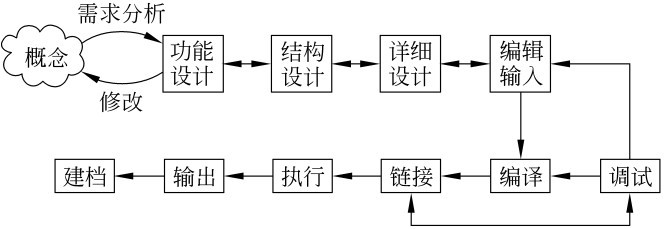
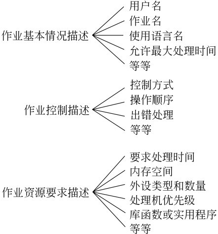
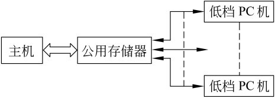
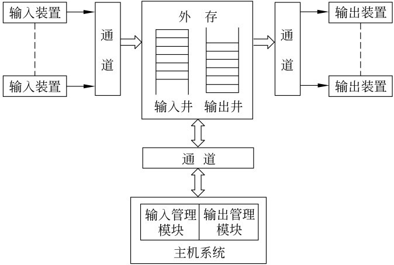
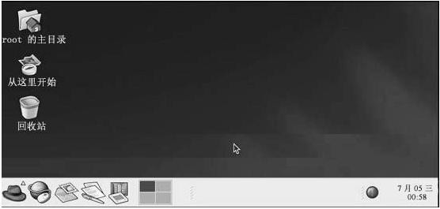
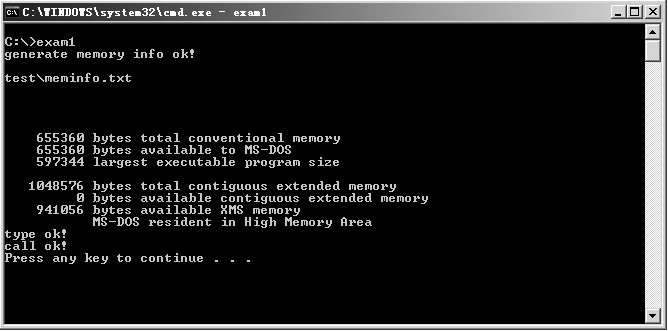
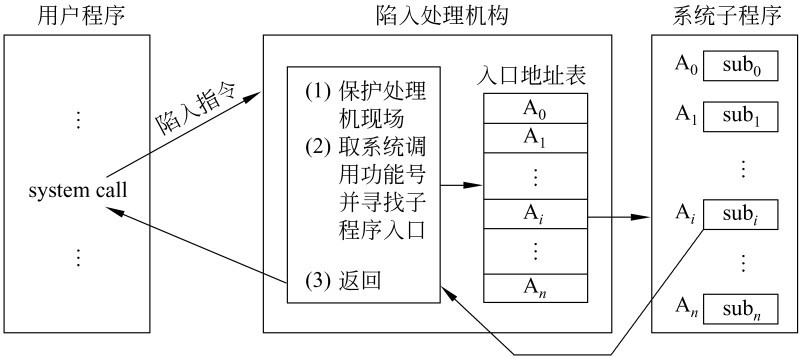

This presentation is an HTML5 website
Press → key to advance.
#include <iostream>
using namespace std;
void loop2(int *a, int len)
{
int x;
for (int k=1; k<=len; k++)
{
x = k;
cout <<x<< " ";
for (x=a[x]; x!=k; x=a[x])
cout <<x<< " ";
cout << endl;
}
}
int main(int argc, char **argv)
{
int p[] ={7,4,7,3,2,1,5,6};
loop2(p, p[0]);
return 0;
}
用户界面是操作系统的重要组成部分，用户界面负责用户和操作系统之间的交互。
操作系统的操作命令界面作为命令控制界面， 也称为命令提示符。


作业说明书包含三方面

在直接耦合方式中，慢速的输入输出过程仍由外围机自己管理，而对公用存储器中的大量数据的高速读写则由主机完成。直接耦合方式需要一个大容量的公用存储器，把多台外围机、主机和公用存储器固定连接起来。


mkdir backup for filein 'ls' do cp $file backup/ $ file if [$ > -ne 0] then echo "copying $ file error" fi done
| 失败运行一条命令， 才运行第二条命令: Command1 | Command2 |
systeminfo & mem
@echo off mkdir test echo hello pause
exam2.bat: @echo off mem>%1/meminfo.txt echo generate memoryinfo Ok! exam3.bat: @echo off type %1\*.txt echo type ok! exam1.bat: @echo off mkdir test call exam2.bat test call exam3.bat test echo call OK! pause

在系统中为控制系统调用服务的机构称为陷阱处理机构
由于系统调用引起处理机中断的指令称为陷阱指令（或称为访管指令）

一般把处理机在用户程序中执行称为用户态，而把处理机在系统程序中执行称为系统态。
#include <fcntl.h>
#include <sys/stat.h>
#define SIZE 1
void filecopy(char* infile, char * outfile)
{
char Buffer[SIZE];
int in_fh, out_fh, count;
if (in_fh = open(infile, O_RDONLY))==-1) // 以只读模式打开输入文件
printf("Opening infile");
if (out_fh = open(outfile, (O_WRONLY|O_CREAT|O_TRUNC),
(S_IRUSER|S_IWUSR))==-1) //以读写模式新建一个文件
printf("Opening outfile");
while((count == read(in_fh, Buffer, sizeof(Buffer)))>0)
if (write(out_fh, Buffer, count)!=count) // 复制
printf("Writing date");
if (count==-1)
printf("Reading date");
close(in_fh); // 关闭输入文件
close(out_fh); // 关闭输出文件
}
#include <windows.h>
//入口函数
int WINAPI WinMain(HINSTANCE hInstance, HINSTANCE hPrevInstance,
PSTR szCmdLine, intiCmdshow)
{
HANDLE hFile;
LPTSTR lpBuffer="Hello World!";
// 创建文件
hFile = CreateFile("C:\\File.txt", GENERIC_READ | GENERIC_WRITE,
0, NULL, OPEN_ALWAYS, FILE_ATTRIBUTE_NORMAL, NULL);
CloseHandle(hFile);
TCHAR szBuf[128];
DWORD dwRead;
DWORD dwWritten;
// 打开文件
hFile = CreateFile("C:\\File.txt", GENERIC_READ | GENERIC_WRITE,
0, NULL, OPEN_ALWAYS, FILE_ATTRIBUTE_NORMAL, NULL);
// 向文件写入一个字符串
WriteFile(hFile, IpBuffer, strlen(IpBuffer)+1, &dwRead, NULL);
SetFilePointer(hFile, 0, NULL, FILE_BEGIN);
// 从文件中读出一个字符串并将它显示在对话框中
if (ReadFile(hFile, szBuf, strlen(ipBuffer)+1, &dwWritten, NULL))
{
MessageBox(NULL, szBuf, "EXAM", MB_OK);
}
CloseHandle(hFile);
}
使用Windows系统调用写一个拷贝文件夹的程序